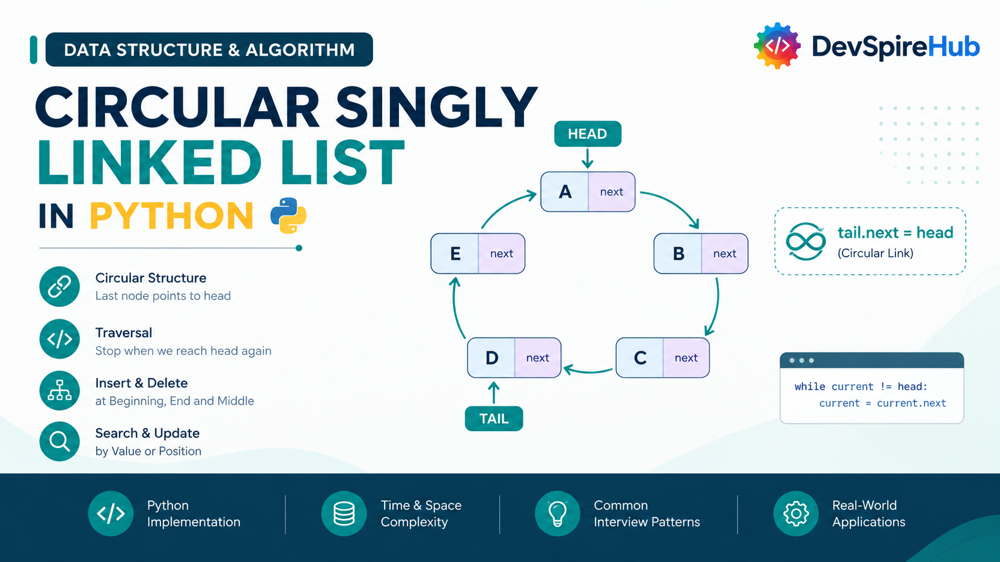
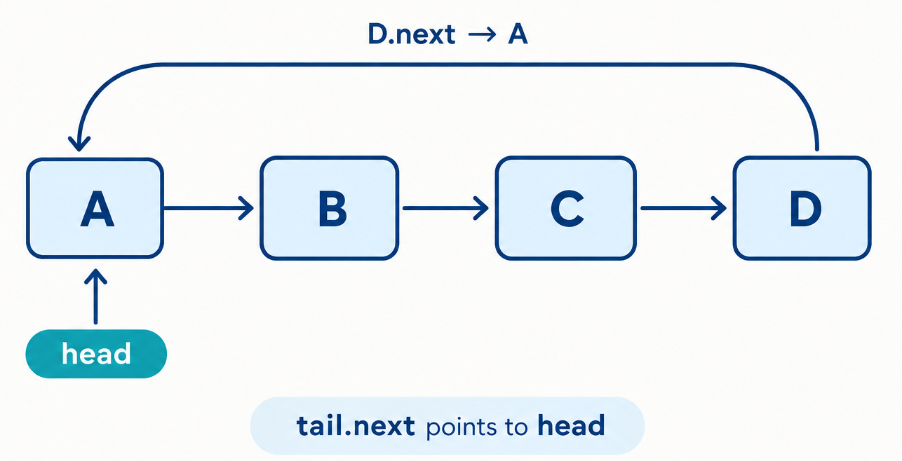

Circular Singly Linked List Data Structure in Python – Complete Tutorial with Examples
A circular singly linked list in Python is a useful data structure for storing elements in a continuous, repeating sequence. Unlike a regular singly linked list, the last node does not point to None; instead, it points back to the first node, creating a circular linked list.

Designed for beginners and developers preparing for technical interviews, this circular singly linked list tutorial covers:
- Core Concepts & Structure: Understand how a circular singly linked list works, including nodes with a
valueandnextpointer, the role ofheadandtail, and whytail.nextmust always point back tohead. - Implementations: Build a circular singly linked list from scratch using a custom Node class and standalone functions. Learn how to represent empty, one-node, and multi-node circular lists without using a linked-list class.
- Essential Operations: Master circular linked list traversal, insertion at the beginning and end, insertion after or before a value, deletion at the beginning and end, deletion by value or node, searching, updating, rotating, and splitting a circular list.
- Real-World Applications: Explore how circular singly linked lists support round-robin scheduling, repeating playlists, turn-based games, circular queues, circular buffers, and Josephus-style simulations.
- Interview Prep & Patterns: Practice important interview concepts such as detecting cycles with Floyd’s algorithm, finding predecessors, preserving the
tail.next == headinvariant, splitting a circular list, rotating nodes, implementing a circular queue, and solving the Josephus problem.
Table of Contents
Introduction
1. What Is Circular Singly Linked List?
A circular singly linked list is a variation of a regular singly linked list. Each node stores a value and a reference to the next node, but the final node does not point to None. Instead, its next pointer refers back to the first node, creating a continuous loop.
Real-World Analogy: Think of a relay race run on a circular track instead of a straight one. Runners pass the baton from one to the next, and after the last runner, the baton goes right back to the first, the race can go on for as many laps as you want, with no finish line built into the structure itself.

In a standard singly linked list, reaching None indicates that the traversal is complete. In a circular singly linked list, there is no natural endpoint. Traversal must stop when the current node reaches the head again; otherwise, the loop will continue indefinitely
The node structure remains simple:
value– the actual data stored in the node.next– pointer to the following node (orNoneif this is the last node).tail.next– points back tohead.
Real systems/software that use circular singly linked lists internally:
- Round-robin CPU scheduling operating systems cycle through processes, giving each a time slice before moving to the next, endlessly.
- Multiplayer turn-based games cycling through player turns, looping back to the first player after the last.
- Music playlists on "repeat all" loops back to the first track after the last one finishes.
- Circular buffers in networking and audio/video streaming, where old data is continuously overwritten in a fixed loop.
- The Josephus Problem - a classic elimination puzzle that's naturally modeled as a circular list.
2. Core Operations & Complexity
Before you write a single line of code, it helps to know exactly what a circular singly linked list can do, and how fast each action really is. In this section, we break down the core linked list operations: insert, delete, search / traversal, update, and reverse, along with their time complexities and underlying mechanics.
| Operation | Time Complexity | Notes |
|---|---|---|
| Insert at beginning | O(1) | tail lets the new head be linked immediately. |
| Insert at end | O(1) | The existing tail is already known. |
| Insert after a node | O(1) | The target node is supplied directly. |
| Insert after a value | O(n) | The list must be searched first. |
| Insert before a node | O(n) | A predecessor must be found in a singly linked list. |
| Insert before a value | O(n) | Searching for the value and its predecessor is required. |
| Delete at beginning | O(1) | The head and tail.next are updated directly. |
| Delete at end | O(n) | The predecessor of the tail must be found. |
| Delete by value | O(n) | The list may need to be searched. |
| Delete a specific node | O(n) | Its predecessor must usually be located. |
| Search by value | O(n) | At most one complete loop is required. |
| Update by value | O(n) | Searching dominates the operation. |
| Update by node | O(1) | A direct node reference is already available. |
| Rotate | O(n) with this implementation | Counting nodes and walking to the new head are linear. |
| Split | O(n) | The midpoint is found with a traversal. |
| Josephus elimination | O(nk) | Direct simulation walks up to k positions for each elimination. |
3. Core Operations Explained (With Examples)
The following sections explain each circular singly linked list operation using short, focused code examples. Every snippet demonstrates one task at a time, making it easier to understand how the node connections change.
We'll use this Node class throughout, with only a next pointer:
Python
class Node:
def __init__(self, value):
self.value = value
self.next = None
The value attribute stores the data, while next points to the following node in the list.
A display helper can show the loop clearly:
Python
def display(head):
values = traverse(head)
print(
" -> ".join(map(str, values)) + " -> back to head"
if values
else "Empty list"
)
3.1 Insertion
3.1.1 Insert at Beginning
How it works, step by step:
- Create a new node with the required value.
- Set the new node’s
nextpointer to the current head.. - Update the old tail’s
nextpointer so it points to the new node. - Assign the new node as the new head..
Before:
┌─────────────────┐
↓ │
[ B ] → [ C ] ───────┘
After inserting A at head:
┌─────────────────────────┐
↓ │
[ A ] → [ B ] → [ C ] ───────┘
Isolated code:
Python - by Value
def insert_at_beginning_by_value(head, tail, value):
# Create a new node containing the given value.
new_node = Node(value)
# Check whether the list is empty.
if head is None:
# A one-node circular list points back to itself.
new_node.next = new_node
# The new node is both the head and the tail.
return new_node, new_node
# Point the new node to the current head.
new_node.next = head
# Connect the old tail to the new head.
# This keeps the list circular.
tail.next = new_node
# Return the new node as the head.
# The tail remains unchanged.
return new_node, tail
head = None
tail = None
head, tail = insert_at_beginning_by_value(head, tail, "C")
head, tail = insert_at_beginning_by_value(head, tail, "B")
head, tail = insert_at_beginning_by_value(head, tail, "A")
display(head)
3.1.2 Insertion at Tail
How it works, step by step:
- Create or receive the node that will be added.
- If the list is empty, point the node's
nextto itself. - Return the node as both
headandtailfor an empty list. - For a non-empty list, point the new node's
nexttohead. - Point the current
tail'snextto the new node. - Keep
headunchanged. - Update
tailto the new node. - Return the updated
headandtail.
Before (with a tracked tail pointer):
┌─────────────────┐
↓ │
[ A ] → [ B ] ───────┘
After inserting "C":
┌─────────────────────────┐
↓ │
[ A ] → [ B ] → [ C ] ───────┘
Isolated code:
Python - by Value
def insert_at_end_by_value(head, tail, value):
# Create a new node using the supplied value.
new_node = Node(value)
# Check whether the list is empty.
if head is None:
# A one-node circular list points back to itself.
new_node.next = new_node
# The new node is both the head and the tail.
return new_node, new_node
# Point the new node to the head.
# This keeps the circular structure closed.
new_node.next = head
# Connect the current tail to the new node.
tail.next = new_node
# The head remains unchanged.
# The new node becomes the new tail.
return head, new_node
head = None
tail = None
head, tail = insert_at_end_by_value(head, tail, "A")
head, tail = insert_at_end_by_value(head, tail, "B")
head, tail = insert_at_end_by_value(head, tail, "C")
display(head)
3.1.3 Insertion at the Middle (AFTER a Given Node/Value)
How it works, step by step:
- For the node-based version, receive an existing target node. For the value-based version, start at
headand search for the target value. - Create a new node containing the value to insert.
- Save the target node's current successor by assigning it to
new_node.next. - Point the target node's
nextto the new node. - The new node now points to the target's former successor.
- For a value-based search, stop after the first matching value is found.
- If the target is the tail, update
tailto the new node. - If the target value is not found, stop when traversal returns to
head.
Before (inserting after B):
[ A ] → [ B ] → [ D ] → (back to A)
After inserting C after B:
[ A ] → [ B ] → [ C ] → [ D ] → (back to A)
Isolated code:
Python - by Value
def insert_after_value(head, tail, target_value, new_value):
# An empty list has no value to search.
if head is None:
return head, tail, False
# Begin searching from the head.
current = head
while True:
# Check whether the current node contains the target value.
if current.value == target_value:
# Insert the new node after the matching node.
new_node = Node(new_value)
new_node.next = current.next
current.next = new_node
# If the target was the tail, the new node becomes the tail.
if current is tail:
tail = new_node
return head, tail, True
# Move to the next node.
current = current.next
# Returning to head means the complete circle was searched.
if current is head:
return head, tail, False
head = None
tail = None
head, tail = insert_at_end(head, tail, "A")
head, tail = insert_at_end(head, tail, "B")
head, tail = insert_at_end(head, tail, "D")
head, tail, inserted = insert_after_value(
head,
tail,
"B",
"C"
)
display(head)
3.1.4 Insertion at the Middle (BEFORE a Given Node/Value)
How it works, step by step:
- Check whether the target node is the current
head. - If the target is the head, insert the new value at the beginning of the list.
- If the target is not the head, start traversal at
head. - Move through the list until finding the node whose
nextis the target node. - Create a new node containing the supplied value.
- Point the new node's
nextto the target node. - Point the predecessor's
nextto the new node. - Return the updated list references.
- Stop traversal if the target node is not found after one complete loop.
Before inserting C before D:
BEFORE a Given Node/Value
After inserting C before D
[ A ] → [ B ] → [ X ] → [ C ] → (back to A)
Isolated code:
Python
def insert_before_node(head, tail, target_node, value):
# An empty list cannot contain the target node.
if head is None:
return head, tail, False
# If the target is the head, insert at the beginning.
if head is target_node:
head, tail = insert_at_beginning_by_value(head, tail, value)
return head, tail, True
# Start searching for the predecessor of target_node.
previous = head
# Walk until the next node is the target.
while previous.next is not target_node:
previous = previous.next
# Returning to head means the target is not in the list.
if previous is head:
return head, tail, False
# Create the new node.
new_node = Node(value)
# Place the new node before the target.
new_node.next = target_node
previous.next = new_node
# Return the unchanged head and updated tail.
return head, tail, True
def find_tail(head):
# An empty list has no tail.
if head is None:
return None
# Start at the head.
current = head
# Continue until the next node is the head.
while current.next is not head:
current = current.next
# The current node is the tail.
return current
head = None
tail = None
head, tail = insert_at_end(head, tail, "A")
head, tail = insert_at_end(head, tail, "B")
head, tail = insert_at_end(head, tail, "C")
head, tail = insert_at_end(head, tail, "D")
target_node = head.next.next
head, tail, inserted = insert_before_node(
head,
tail,
target_node,
"X"
)
display(head)
print("Inserted:", inserted)
print("Circular:", tail.next is head)
3.2 Deletion
3.2.1 Delete at Beginning - (by Value/Node)
How it works, step by step:
- Check whether the list is empty.
- If the list is empty, return
None, None. - Check whether
headandtailrefer to the same node. - If there is only one node, remove it by returning
None, None. - For a list with multiple nodes, store
head.nextas the new head. - Point
tail.nextto the new head to preserve the circular link. - Return the updated head and the unchanged tail.
- The node-based helper uses the same logic without searching for a value because the head is already known.
Before:
[ A ] → [ B ] → [ C ] → (back to A)
After deleting the head:
[ B ] → [ C ] → (back to B)
Isolated code:
Python
def delete_at_beginning_by_value(head, tail):
# Check whether the list is empty.
if head is None:
return None, None
# Handle a list containing only one node.
if head is tail:
return None, None
# Move the head to the second node.
new_head = head.next
# Connect the tail to the new head.
tail.next = new_head
# Return the updated head and the unchanged tail.
return new_head, tail
def delete_head_node(head, tail):
# Reuse the existing beginning-deletion function.
return delete_at_beginning_by_value(head, tail)
head = None
tail = None
head, tail = insert_at_end(head, tail, "A")
head, tail = insert_at_end(head, tail, "B")
head, tail = insert_at_end(head, tail, "C")
display(head)
head, tail = delete_at_beginning_by_value(head, tail)
display(head)
head, tail = delete_head_node(head, tail)
display(head)
3.2.2 Delete at End — (by Value/Node)
How it works, step by step:
- Check whether the list is empty.
- If the list is empty, return
None, None. - Check whether the list contains only one node.
- If there is one node, remove it by returning
None, None. - Start at
headand move forward until reaching the node immediately beforetail. - Point this second-to-last node's
nexttohead. - Return the original head and make the second-to-last node the new tail.
- The helper function uses the same process because knowing the tail does not reveal its predecessor.
Before:
[ A ] → [ B ] → [ C ] → (back to A)
After deleting the tail (C):
[ A ] → [ B ] → (back to A)
Isolated code:
Python
def delete_at_end_by_value(head, tail):
# Check whether the list is empty.
if head is None:
return None, None
# Handle a list containing only one node.
if head is tail:
return None, None
# Start from the head.
current = head
# Stop when current is the node immediately before the tail.
while current.next is not tail:
current = current.next
# Connect the new tail to the head.
current.next = head
# Return the original head and the new tail.
return head, current
def delete_tail_node(head, tail):
# Reuse the existing end-deletion function.
return delete_at_end_by_value(head, tail)
head = None
tail = None
head, tail = insert_at_end(head, tail, "A")
head, tail = insert_at_end(head, tail, "B")
head, tail = insert_at_end(head, tail, "C")
display(head)
head, tail = delete_at_end_by_value(head, tail)
display(head)
head, tail = delete_tail_node(head, tail)
display(head)
3.2.3 Delete in the Middle - (by Value/Node)
How it works, step by step:
- Check whether the list is empty.
- For the value-based function, compare the target with the head value.
- If the head matches, remove it using the beginning-deletion function.
- Compare the target with the tail value.
- If the tail matches, remove it using the end-deletion function.
- For a middle node, keep two references:
previousandcurrent. - Move through the list until the target value or target node is found.
- Skip the target by setting
previous.next = target.next. - Return the updated
headandtail. - Stop a value search when traversal returns to
head.
Before (deleting B):
[ A ] → [ B ] → [ C ] → (back to A)
After:
[ A ] → [ C ] → (back to A)
Isolated code:
Python - by Value
def delete_middle_by_value(head, tail, target_value):
# Stop immediately if the list is empty.
if head is None:
return head, tail
# If the head contains the target, delete the head.
if head.value == target_value:
return delete_at_beginning_by_value(head, tail)
# If the tail contains the target, delete the tail.
if tail.value == target_value:
return delete_at_end_by_value(head, tail)
# Start with the head as the predecessor.
previous = head
# Start checking from the second node.
current = head.next
# Continue until the traversal returns to the head.
while current is not head:
# Check whether the current node contains the target value.
if current.value == target_value:
# Remove the current node from the circle.
previous.next = current.next
# Return the unchanged head and tail.
return head, tail
# Move both references forward.
previous = current
current = current.next
# The value was not found.
return head, tail
head = None
tail = None
for value in ["A", "B", "C", "D"]:
head, tail = insert_at_end(head, tail, value)
display(head)
head, tail = delete_middle_by_value(head, tail, "C")
display(head)
3.3 Search / Traversal
3.3.1 Search by Value
How it works, step by step:
- Check whether the list is empty.
- If the list is empty, return
False. - Start traversal at
head. - Compare the current node with the search target.
- For value-based search, compare values using
==. - For node-based search, compare object identity using
is. - Return
Truewhen a match is found. - Move to the next node when there is no match.
- Return
Falsewhen traversal returns tohead.
Trace for searching "C" in A → B → C → (back to A):
Step 1: current = A → A.value == "C"? No
Step 2: current = B → B.value == "C"? No
Step 3: current = C → C.value == "C"? Yes → FOUND
Isolated code:
Python - by Value
def search_by_value(head, target_value):
# An empty list does not contain any value.
if head is None:
return False
# Start the search at the head.
current = head
while True:
# Compare the current node's value with the target value.
if current.value == target_value:
return True
# Move to the next node.
current = current.next
# Returning to head means the full circle was searched.
if current is head:
return False
head = None
tail = None
head, tail = insert_at_end(head, tail, "A")
head, tail = insert_at_end(head, tail, "B")
head, tail = insert_at_end(head, tail, "C")
print(search_by_value(head, "C"))
print(search_by_value(head, "X"))
3.4 Update
3.4.1 Update by Value
How it works, step by step:
- For value-based updating, check whether the list is empty.
- Start at
headand move through the circular list. - Compare each node's value with
old_value. - When a match is found, replace it with
new_value. - For node-based updating, access the supplied node directly.
- Assign
new_valueto the node'svalueattribute. - Return
Truefor a successful value-based update. - Return
Falseif the value is not found.
Isolated code:
Python - by Value
def update_by_value(head, old_value, new_value):
# An empty list cannot contain the old value.
if head is None:
return False
# Start searching at the head.
current = head
while True:
# Check whether the current node contains the old value.
if current.value == old_value:
# Replace the old value with the new value.
current.value = new_value
return True
# Move to the next node.
current = current.next
# Returning to head means the complete circle was searched.
if current is head:
return False
head = None
tail = None
head, tail = insert_at_end(head, tail, "A")
head, tail = insert_at_end(head, tail, "B")
head, tail = insert_at_end(head, tail, "C")
updated = update_by_value(head, "B", "X")
display(head)
3.5 Structure-Specific Operations
3.5.1 Detecting Circularity (Floyd's Cycle Detection)
The is_circular function uses Floyd’s cycle-detection algorithm. It moves one pointer slowly and another pointer quickly. If the two pointers meet, a cycle exists.
How it works, step by step:
- Check whether
headisNone. - If the list is empty, return
False. - Set both
slowandfasttohead. - Move
slowforward by one node. - Move
fastforward by two nodes. - Check whether both pointers refer to the same node.
- If they meet, return
Truebecause a cycle exists. - If
fastreachesNone, returnFalse.
Isolated code:
Python
def is_circular(head):
# An empty list is not considered circular.
if head is None:
return False
# Start both pointers at the head.
slow = head
fast = head
# Continue while the fast pointer can move safely.
while fast is not None and fast.next is not None:
# Move slow one node at a time.
slow = slow.next
# Move fast two nodes at a time.
fast = fast.next.next
# If both pointers refer to the same node,
# a cycle has been detected.
if slow is fast:
return True
# The fast pointer reached the end,
# so no cycle exists.
return False
# Create a circular list.
node_a = Node("A")
node_b = Node("B")
node_c = Node("C")
node_a.next = node_b
node_b.next = node_c
node_c.next = node_a
print(is_circular(node_a))
3.5.2 Breaking Circularity
How it works: Walk to the tail (the node whose next points back to head) and set its next to None, converting the structure back into a regular Singly Linked List.
How it works, step by step:
- Check whether the list is empty.
- If the list is empty, stop because there is no link to change.
- Start at
head. - Move forward until finding the node whose
nextpoints tohead. - This node is the tail of the circular list.
- Change the tail's
nextreference toNone. - The circular list is now a regular singly linked list.
Python
def break_circularity(head):
# An empty list has no circular link to break.
if head is None:
return
# Start traversal at the head.
current = head
# Find the tail by looking for the node
# whose next pointer refers back to head.
while current.next is not head:
current = current.next
# Remove the circular link.
# The list now ends at the tail.
current.next = None
node_a = Node("A")
node_b = Node("B")
node_c = Node("C")
node_d = Node("D")
node_a.next = node_b
node_b.next = node_c
node_c.next = node_d
node_d.next = node_a
head = node_a
break_circularity(head)
4. Implementations
Now that you understand the basic operations of a circular singly linked list, it’s time to combine them into complete Python implementations. This section begins with a custom Node class and a linked-list class that supports common operations such as adding, deleting, searching, and displaying values.
Method 1 - Complete From-Scratch Class (all variants as methods)
This class collects every method introduced in Section 3 into one working reference implementation:
Python
class Node:
def __init__(self, value):
self.value = value
self.next = None
class CircularSinglyLinkedList:
def __init__(self):
self.head = None
self.tail = None
self._size = 0
# ---- Insertion ----
def insert_at_beginning(self, value):
new_node = Node(value)
if self.head is None:
new_node.next = new_node
self.head = self.tail = new_node
else:
new_node.next = self.head
self.tail.next = new_node
self.head = new_node
self._size += 1
def insert_at_end(self, value):
new_node = Node(value)
if self.head is None:
new_node.next = new_node
self.head = self.tail = new_node
else:
new_node.next = self.head
self.tail.next = new_node
self.tail = new_node
self._size += 1
def insert_after_value(self, target_value, value):
current = self.head
if current is None:
return False
while True:
if current.value == target_value:
new_node = Node(value)
new_node.next = current.next
current.next = new_node
if current is self.tail:
self.tail = new_node
self._size += 1
return True
current = current.next
if current is self.head:
return False
def insert_before_value(self, target_value, value):
if self.head is None:
return False
if self.head.value == target_value:
self.insert_at_beginning(value)
return True
current = self.head
while current.next is not self.head:
if current.next.value == target_value:
new_node = Node(value)
new_node.next = current.next
current.next = new_node
self._size += 1
return True
current = current.next
return False
# ---- Deletion ----
def delete_at_beginning(self):
if self.head is None:
return
if self.head is self.tail:
self.head = self.tail = None
else:
self.head = self.head.next
self.tail.next = self.head
self._size -= 1
def delete_at_end(self):
if self.head is None:
return
if self.head is self.tail:
self.head = self.tail = None
else:
current = self.head
while current.next is not self.tail:
current = current.next
current.next = self.head
self.tail = current
self._size -= 1
def delete_by_value(self, target_value):
if self.head is None:
return False
if self.head.value == target_value:
self.delete_at_beginning()
return True
if self.tail.value == target_value:
self.delete_at_end()
return True
previous, current = self.head, self.head.next
while current is not self.head:
if current.value == target_value:
previous.next = current.next
self._size -= 1
return True
previous, current = current, current.next
return False
# ---- Search ----
def search(self, target_value):
if self.head is None:
return False
current = self.head
while True:
if current.value == target_value:
return True
current = current.next
if current is self.head:
return False
# ---- Update ----
def update_by_value(self, old_value, new_value):
if self.head is None:
return False
current = self.head
while True:
if current.value == old_value:
current.value = new_value
return True
current = current.next
if current is self.head:
return False
# ---- Structure-specific ----
def is_circular(self):
if self.head is None:
return False
slow = fast = self.head
while fast is not None and fast.next is not None:
slow, fast = slow.next, fast.next.next
if slow is fast:
return True
return False
def rotate(self, k):
if self.head is None or self._size == 0:
return
current = self.head
for _ in range(k % self._size):
current = current.next
temp = self.head
while temp.next is not current:
temp = temp.next
self.head, self.tail = current, temp
def to_list(self):
if self.head is None:
return []
result = []
current = self.head
while True:
result.append(current.value)
current = current.next
if current is self.head:
break
return result
def size(self):
return self._size
csll = CircularSinglyLinkedList()
csll.insert_at_end(1)
csll.insert_at_end(2)
csll.insert_at_end(3)
csll.insert_at_beginning(0)
print(csll.to_list()) # [0, 1, 2, 3]
csll.insert_after_value(1, 1.5)
print(csll.to_list()) # [0, 1, 1.5, 2, 3]
csll.delete_by_value(1.5)
print(csll.to_list()) # [0, 1, 2, 3]
csll.rotate(2)
print(csll.to_list()) # [2, 3, 0, 1]
Step-by-Step Explanation
What This Program Does
This program implements a circular singly linked list using two classes:
Nodestores a value and a link to the next node.CircularSinglyLinkedListmanages the list’s head, tail, and size.
The list is circular because the tail always points back to the head:
1. The Node Class
Python
tail.next is headThe program performs these operations:
- Inserts values at the end.
- Inserts a value at the beginning.
- Inserts a value after another value.
- Deletes a value.
- Rotates the list by two positions.
1. The Node Class
Python
class Node:
def __init__(self, value):
self.value = value
self.next = NoneEach node contains two fields:
value: stores the data.next: points to the next node.
When a node is first created, next is set to None. The insertion methods later connect it to another node.
2. Creating the List
Python
csll = CircularSinglyLinkedList()The constructor initializes an empty list:
Python
self.head = None
self.tail = None
self._size = 0The initial state is:
head = None
tail = None
size = 03. Inserting 1 at the End
Python
csll.insert_at_end(1)Because the list is empty:
- A new node containing 1 is created.
- The node points to itself.
- The node becomes both head and tail.
- The size becomes 1.
head
↓
[1]
↑
└── nextCurrent list:
[1]4. Inserting 2 at the End
Python
csll.insert_at_end(2)The method performs these steps:
- Create a node containing 2.
- Point the new node to the current head, 1.
- Point the old tail, 1, to the new node.
- Update tail to node 2.
- Increase the size to 2.
head tail
↓ ↓
[1] → [2]
↑ │
└──────────┘Current list:
[1, 2]5. Inserting 3 at the End
Python
csll.insert_at_end(3)The same pointer changes are applied:
head tail
↓ ↓
[1] → [2] → [3]
↑ │
└─────────────────┘Current list:
[1, 2, 3]The size is now 3.
6. Inserting 0 at the Beginning
Python
csll.insert_at_beginning(0)The method performs these steps:
- Create a node containing 0.
- Point the new node to the current head, 1.
- Point the tail, 3, to the new node.
- Make 0 the new head.
- Increase the size to 4.
head tail
↓ ↓
[0] → [1] → [2] → [3]
↑ │
└───────────────────────┘The first output statement is:
Python
print(csll.to_list())Output:
[0, 1, 2, 3]7. Inserting 1.5 After 1
Python
csll.insert_after_value(1, 1.5)The method searches from the head:
0 → 1 → 2 → 3It finds the node containing 1.
The pointer updates are:
Python
new_node.next = current.next
current.next = new_nodeBefore insertion:
[1] → [2]After insertion:
[1] → [1.5] → [2]The complete list becomes:
[0] → [1] → [1.5] → [2] → [3]The size becomes 5.
The next output is:
Python
print(csll.to_list())Output:
[0, 1, 1.5, 2, 3]8. Deleting 1.5
Python
csll.delete_by_value(1.5)The method searches for the target value while tracking two nodes:
previous → currentWhen current contains 1.5, the method skips over it:
Python
previous.next = current.nextBefore deletion:
[1] → [1.5] → [2]After deletion:
[1] → [2]The complete list becomes:
[0] → [1] → [2] → [3]The size returns to 4.
The next output is:
Python
print(csll.to_list())Output:
[0, 1, 2, 3]9. Rotating the List by 2
Python
csll.rotate(2)Rotation changes which node is treated as the head. It does not create or delete nodes.
Before rotation:
head
↓
[0] → [1] → [2] → [3]
↑ │
└──────────────────┘The method moves the head forward two times:
- Step 1: head moves from 0 to 1
- Step 2: head moves from 1 to 2
The new head is 2. The new tail is the node before it, 1.
After rotation:
head
↓
[2] → [3] → [0] → [1]
↑ │
└──────────────────┘The final output is:
Python
print(csll.to_list())Output:
[2, 3, 0, 1]Trace Table
| Step | Operation | Head | Tail | Size | List order |
|---|---|---|---|---|---|
| 1 | Create empty list | None | None | 0 | [] |
| 2 | Insert 1 at end | 1 | 1 | 1 | [1] |
| 3 | Insert 2 at end | 1 | 2 | 2 | [1, 2] |
| 4 | Insert 3 at end | 1 | 3 | 3 | [1, 2, 3] |
| 5 | Insert 0 at beginning | 0 | 3 | 4 | [0, 1, 2, 3] |
| 6 | Insert 1.5 after 1 | 0 | 3 | 5 | [0, 1, 1.5, 2, 3] |
| 7 | Delete value 1.5 | 0 | 3 | 4 | [0, 1, 2, 3] |
| 8 | Rotate by 2 | 2 | 1 | 4 | [2, 3, 0, 1] |
After every mutation, the circular invariant remains true:
Python
csll.tail.next is csll.headMethod Summary
| Method | Purpose | Typical complexity |
|---|---|---|
insert_at_beginning |
Adds a node before the head | O(1) |
insert_at_end |
Adds a node after the tail | O(1) |
insert_after_value |
Inserts after the first matching value | O(n) |
insert_before_value |
Inserts before the first matching value | O(n) |
delete_at_beginning |
Removes the head node | O(1) |
delete_at_end |
Removes the tail node | O(n) |
delete_by_value |
Removes the first matching value | O(n) |
search |
Checks whether a value exists | O(n) |
update_by_value |
Changes the first matching value | O(n) |
is_circular |
Detects whether a cycle exists | O(n) |
rotate |
Changes the logical head | O(n) in this implementation |
to_list |
Converts one circular traversal to a Python list | O(n) |
size |
Returns the stored node count | O(1) |
Final Output
Running the complete program produces:
[0, 1, 2, 3]
[0, 1, 1.5, 2, 3]
[0, 1, 2, 3]
[2, 3, 0, 1]The program demonstrates how a circular singly linked list can support insertion, deletion, and rotation while maintaining the connection from the tail back to the head.
Method 2: Standalone Function Reference (collected separately)
For comparison, here are the equivalent standalone functions gathered in one place, all operating on plain head/tail arguments instead of self:
Python
class Node:
def __init__(self, value):
self.value = value
self.next = None
def insert_at_beginning(head, tail, value):
# Create a new node with the supplied value.
new_node = Node(value)
# Handle an empty list.
if head is None:
# A one-node circular list points to itself.
new_node.next = new_node
# The new node is both the head and the tail.
return new_node, new_node
# Link the new node before the current head.
new_node.next = head
# Connect the old tail to the new head.
tail.next = new_node
# Return the new head and unchanged tail.
return new_node, tail
def insert_at_end(head, tail, value):
# Create a new node with the supplied value.
new_node = Node(value)
# Handle an empty list.
if head is None:
# A one-node circular list points to itself.
new_node.next = new_node
# The new node is both the head and the tail.
return new_node, new_node
# Connect the new node to the head.
new_node.next = head
# Connect the old tail to the new node.
tail.next = new_node
# Keep the head and return the new node as the tail.
return head, new_node
def delete_at_beginning(head, tail):
# The list is empty, or it contains only one node.
if head is None or head is tail:
return None, None
# Move the head to the next node.
new_head = head.next
# Preserve circularity by connecting the tail to the new head.
tail.next = new_head
# Return the updated head and unchanged tail.
return new_head, tail
def search(head, target_value):
# An empty list does not contain the target.
if head is None:
return False
# Start searching from the head.
current = head
while True:
# Compare the current node's value with the target.
if current.value == target_value:
return True
# Move to the next node.
current = current.next
# Stop after completing one full circle.
if current is head:
return False
# Start with an empty circular list.
head, tail = None, None
# Add "A" at the end.
head, tail = insert_at_end(head, tail, "A")
# Add "B" at the end.
head, tail = insert_at_end(head, tail, "B")
# Search for "B".
print(search(head, "B"))
Step-by-Step Explanation
What This Program Does
This program defines a Node class and several standalone functions for working with a circular singly linked list.
The example demonstrates:
- Creating an empty list.
- Adding "A" at the end.
- Adding "B" at the end.
- Searching for "B".
The list maintains this important rule:
Python
tail.next is headThat link makes the list circular.
1. The Node Class
Python
class Node:
def __init__(self, value):
self.value = value
self.next = NoneEach node contains:
value: the data stored in the node.next: a reference to the next node.
When a node is created, its next pointer is initially None. The insertion functions later connect it to another node.
2. Inserting at the Beginning
Python
def insert_at_beginning(head, tail, value):This function adds a new node before the current head.
The steps are:
- Create a node using the supplied value.
- If the list is empty, point the node to itself.
- Return the new node as both head and tail for an empty list.
- Otherwise, point the new node to the current head.
- Point the old tail to the new node.
- Return the new head and the unchanged tail.
This function is included in the program but is not called in the final example.
3. Inserting at the End
Python
def insert_at_end(head, tail, value):This function adds a new node after the current tail.
For a non-empty list:
Python
new_node.next = head
tail.next = new_nodeThese assignments connect the new node to the head and connect the old tail to the new node.
The new node then becomes the tail.
4. Deleting from the Beginning
Python
def delete_at_beginning(head, tail):This function removes the first node.
For a list with multiple nodes:
- Move head to head.next.
- Point tail.next to the new head.
- Return the updated head and the unchanged tail.
If the list is empty or contains only one node, the function returns:
None, NoneThis function is also included for future use but is not called in the final example.
5. Searching for a Value
Python
def search(head, target_value):This function checks whether a value exists in the circular list.
It starts at head and compares each node’s value with target_value.
The search stops in one of two situations:
- A matching value is found.
- Traversal returns to head, meaning the entire list has been checked.
The loop must not use:
Python
while current is not None:A circular list does not reach None during normal traversal.
6. Starting with an Empty List
Python
head, tail = None, NoneAt the beginning, the list contains no nodes:
head = None
tail = None7. Adding "A" at the End
Python
head, tail = insert_at_end(head, tail, "A")The list is empty, so the function:
- Creates a node containing "A".
- Points the node to itself.
- Returns the node as both head and tail.
head and tail
↓
[A]
↑
└── nextCurrent list:
A8. Adding "B" at the End
Python
head, tail = insert_at_end(head, tail, "B")The list already contains "A".
The function:
- Creates a node containing "B".
- Points "B" to the head, "A".
- Points the old tail, "A", to "B".
- Makes "B" the new tail.
head tail
↓ ↓
[A] → [B]
↑ │
└──────────┘The list order is:
A → B → back to A9. Searching for "B"
Python
print(search(head, "B"))The search begins at the head.
Search trace
- current points to "A".
- Compare "A" with "B" — no match.
- Move to "B".
- Compare "B" with "B" — match found.
- Return True.
The printed result is:
TruePointer Diagram After Building the List
head
↓
[A] → [B]
↑ │
└─────┘
tailThe tail’s next pointer points back to the head:
Python
tail.next is headTrace Table
| Step | Command | head | tail | List structure | Result |
|---|---|---|---|---|---|
| 1 | head, tail = None, None |
None | None | Empty list | — |
| 2 | insert_at_end(head, tail, "A") |
A | A | A → back to A | Updated references |
| 3 | insert_at_end(head, tail, "B") |
A | B | A → B → back to A | Updated references |
| 4 | search(head, "B") |
A | B | A → B → back to A | True |
Search Trace Table
| Step | current.value | Target | Match? | Action |
|---|---|---|---|---|
| 1 | A | B | No | Move to the next node |
| 2 | B | B | Yes | Return True |
The search stops as soon as it finds the target. It does not need to complete the entire circle.
Complete Program Flow
Python
# Start with an empty circular list.
head, tail = None, None
# Add "A" at the end.
head, tail = insert_at_end(head, tail, "A")
# Add "B" at the end.
head, tail = insert_at_end(head, tail, "B")
# Search for "B".
print(search(head, "B"))Output:
TrueComplexity
| Operation | Time complexity | Reason |
|---|---|---|
| Insert at beginning | O(1) | Only a fixed number of pointers change. |
| Insert at end | O(1) | The tail is already available. |
| Delete at beginning | O(1) | The head and tail.next are updated directly. |
| Search | O(n) | The list may need to be checked node by node. |
The example uses O(1) extra space apart from the newly created nodes.
Method 3: Building a Queue on Top of a Circular Singly Linked List
This directly reuses your Queue tutorial's FIFO logic, but backed by the circular structure instead of deque or a plain array, the same idea as that tutorial's "Design Circular Queue" problem, just implemented with real nodes instead of index math.
Python
class CircularQueueLinkedList:
def __init__(self):
self.tail = None # tracking ONLY tail is enough — tail.next is always head
def enqueue(self, value):
new_node = Node(value)
if self.tail is None:
new_node.next = new_node
self.tail = new_node
else:
new_node.next = self.tail.next
self.tail.next = new_node
self.tail = new_node
def dequeue(self):
if self.tail is None:
raise IndexError("dequeue from empty queue")
head = self.tail.next
if head is self.tail:
self.tail = None
else:
self.tail.next = head.next
return head.value
cq = CircularQueueLinkedList()
cq.enqueue(1)
cq.enqueue(2)
cq.enqueue(3)
print(cq.dequeue()) # 1 — same FIFO behavior as your Queue tutorial
Step-by-Step Explanation
What Problem This Solves
It solves the “waiting line with limited memory” problem: items join at the back and leave from the front, and the structure uses only one pointer (tail) instead of tracking both head and tail separately.
This program implements a circular queue using a linked list with only a tail pointer. It maintains FIFO order by linking the last node back to the first node, so tail.next always points to the head.
1. The Node Concept
Each item is stored in a node that has:
value: the data.next: the link to the next node.
In a circular queue, the last node’s next points back to the first node instead of None.
2. Class and Fields
Python
class CircularQueueLinkedList:
def __init__(self):
self.tail = Noneself.tail points to the last node. Because the list is circular, self.tail.next is always the first node (the logical head). When the queue is empty, self.tail is None.
3. Enqueue Operation
Python
def enqueue(self, value):
new_node = Node(value)
if self.tail is None:
new_node.next = new_node
self.tail = new_node
else:
new_node.next = self.tail.next
self.tail.next = new_node
self.tail = new_nodeCase 1: Empty Queue
If self.tail is None:
- The new node points to itself.
self.tailbecomes that node.
The circular link is:
[tail] → [tail]Case 2: Non-Empty Queue
If the queue already has nodes:
new_node.next = self.tail.next— The new node points to the current head.self.tail.next = new_node— The old tail now points to the new node.self.tail = new_node— The new node becomes the new tail.
Visually, before:
tail → [A] → [B] → (back to A)After enqueueing C:
tail → [A] → [B] → [C] → (back to A)4. Dequeue Operation
Python
def dequeue(self):
if self.tail is None:
raise IndexError("dequeue from empty queue")
head = self.tail.next
if head is self.tail:
self.tail = None
else:
self.tail.next = head.next
return head.valueIf self.tail is None, the queue is empty, so an error is raised. head = self.tail.next gets the first node. If there is only one node (head is self.tail), the queue becomes empty. Otherwise, the tail’s next skips the old head and points to the next node. The removed node’s value is returned.
Trace Table (Successful Example: Enqueue 1, 2, 3 Then Dequeue)
| Step | Operation | Action taken | Resulting state (tail and links) |
|---|---|---|---|
| 1 | Create queue | tail = None |
Empty queue |
| 2 | enqueue(1) |
Create node(1); node.next = node; tail = node |
tail → node(1) → node(1) |
| 3 | enqueue(2) |
Create node(2); node(2).next = tail.next (node1); link tail to node(2); update tail = node(2) |
tail → node(2); order: 1 → 2 → back to 1 |
| 4 | enqueue(3) |
Create node(3); link to head (node1); link old tail to node(3); update tail = node(3) |
tail → node(3); order: 1 → 2 → 3 → back to 1 |
| 5 | dequeue() |
head = tail.next → node(1); more than one node → tail.next = head.next |
tail → node(3); order: 2 → 3 → back to 2; returns 1 |
Final queue logically contains: 2 → 3 → back to 2.
This program maintains a circular FIFO queue using only a tail pointer, where tail.next is always the head, so enqueue links a new node after the tail and dequeue removes the node after the tail while preserving the circular link.
5. Real-World Practical Problemss
Problem 1: Multiplayer Game Turn Manager
Use case: Players take turns in a fixed order, looping back to the first after the last, the textbook circular list scenario.
Python
class GameTurnManager:
def __init__(self):
self.current_player = None
self.tail = None
def add_player(self, name):
new_player = Node(name)
if self.current_player is None:
new_player.next = new_player
self.current_player = self.tail = new_player
else:
new_player.next = self.tail.next
self.tail.next = new_player
self.tail = new_player
def next_turn(self):
player = self.current_player.value
self.current_player = self.current_player.next
return player
game = GameTurnManager()
game.add_player("Alice")
game.add_player("Bob")
game.add_player("Carol")
for _ in range(4):
print(f"{game.next_turn()}'s turn")
# Alice's turn, Bob's turn, Carol's turn, Alice's turn
Step-by-Step Explanation
What Problem This Solves
It solves the “whose turn is it?” problem in a board game or multiplayer session: players take turns in order, and after the last player finishes, the next turn goes back to the first player, repeating forever.
This program manages turns in a round-robin game by storing players in a circular linked list so that after the last player, the turn automatically returns to the first player.
1. The Node Idea
Each player is stored in a node that has:
value: the player’s name.next: a link to the next player’s node.
In a circular list, the last node’s next points back to the first node instead of None.
2. Class and Fields
Python
class GameTurnManager:
def __init__(self):
self.current_player = None
self.tail = Noneself.current_player points to the node whose turn it is now. self.tail points to the last player’s node. Because the list is circular, self.tail.next is always the first player (the logical head). When no players are added yet, both are None.
3. Adding a Player
Python
def add_player(self, name):
new_player = Node(name)
if self.current_player is None:
new_player.next = new_player
self.current_player = self.tail = new_player
else:
new_player.next = self.tail.next
self.tail.next = new_player
self.tail = new_playerCase 1: First Player
If self.current_player is None:
- The new node points to itself:
new_player.next = new_player. - Both
current_playerandtailpoint to this node.
The circle is:
[current_player/tail] → [same node]Case 2: Additional Players
If players already exist:
new_player.next = self.tail.next— The new node points to the first player (becausetail.nextis the head).self.tail.next = new_player— The old last player now points to the new player.self.tail = new_player— The new player becomes the new last player.
The circular order becomes:
first → ... → old_tail → new_player → (back to first)4. Getting the Next Turn
Python
def next_turn(self):
player = self.current_player.value
self.current_player = self.current_player.next
return playerplayer = self.current_player.value reads the current player’s name. self.current_player = self.current_player.next moves the turn pointer to the next player in the circle. return player gives the name of the player whose turn it was. Because the list is circular, after the last player, current_player automatically goes back to the first player.
Why a Circular Linked List Fits This Problem
A circular linked list naturally models an endless repeating order: after the last element, the next element is the first one again. This matches exactly how turns work in a round-robin game.
Visual Text-Diagram (Successful Example: Add Alice, Bob, Carol; Take 4 Turns)
We’ll show current_player (CP) and tail (T) and the links.
Initial State
current_player = None
tail = NoneAfter add_player("Alice")
Node(Alice): next → itself
current_player → Node(Alice)
tail → Node(Alice)
Alice → (back to Alice)After add_player("Bob")
Node(Alice).next → Node(Bob)
Node(Bob).next → Node(Alice)
current_player → Node(Alice)
tail → Node(Bob)
Alice → Bob → (back to Alice)After add_player("Carol")
Node(Bob).next → Node(Carol)
Node(Carol).next → Node(Alice)
current_player → Node(Alice)
tail → Node(Carol)
Alice → Bob → Carol → (back to Alice)Turn 1: next_turn()
player = "Alice"
Move current_player to Bob.
current_player → Node(Bob)
tail → Node(Carol)
Output: Alice's turnTurn 2: next_turn()
player = "Bob"
Move current_player to Carol.
current_player → Node(Carol)
Output: Bob's turnTurn 3: next_turn()
player = "Carol"
Move current_player to Alice (because Carol.next → Alice).
current_player → Node(Alice)
Output: Carol's turnTurn 4: next_turn()
player = "Alice" again
Move current_player to Bob.
current_player → Node(Bob)
Output: Alice's turnTrace Table (Successful Run: Alice, Bob, Carol; 4 Turns)
| Step | Operation / Input | Action taken | Resulting state (CP, tail, links) and output |
|---|---|---|---|
| 1 | Create manager | current_player = None, tail = None |
Empty circle |
| 2 | add_player("Alice") |
Create node(A); A.next = A; CP = tail = A |
CP→A, T→A; A→A |
| 3 | add_player("Bob") |
Create node(B); B.next = A; A.next = B; tail = B |
CP→A, T→B; A→B→A |
| 4 | add_player("Carol") |
Create node(C); C.next = A; B.next = C; tail = C |
CP→A, T→C; A→B→C→A |
| 5 | next_turn() #1 |
player = A.value; CP = A.next (B); return "Alice" |
CP→B, T→C; output: "Alice's turn" |
| 6 | next_turn() #2 |
player = B.value; CP = B.next (C); return "Bob" |
CP→C, T→C; output: "Bob's turn" |
| 7 | next_turn() #3 |
player = C.value; CP = C.next (A); return "Carol" |
CP→A, T→C; output: "Carol's turn" |
| 8 | next_turn() #4 |
player = A.value; CP = A.next (B); return "Alice" |
CP→B, T→C; output: "Alice's turn" |
Trace for a Failing Example (No Players Added, Then next_turn)
Now try to get a turn when no players exist.
Setup
Python
game = GameTurnManager()
# current_player = None, tail = NoneOperation
Python
game.next_turn()Trace Table (Failure Case)
| Step | Operation | Action taken | Resulting state / note |
|---|---|---|---|
| 1 | Create manager | current_player = None, tail = None |
Empty circle |
| 2 | next_turn() |
Try to read self.current_player.value, but current_player is None |
Raises AttributeError because there is no current player |
It fails at step 2 because there is no player node to read, so accessing .value on None causes an error.
This code keeps players in a circular linked list and advances a current_player pointer around the circle so turns repeat forever in the same order.
Problem 2: Round-Robin CPU Scheduling
Use case: A simplified operating-system-style scheduler, cycling through processes and giving each a fixed time slice, reuses the Queue tutorial's "processing in order" idea, but the circular structure naturally re-enqueues each process by just moving on to .next.
Python
class Task:
def __init__(self, name, remaining_time):
self.name = name
self.remaining_time = remaining_time
self.next = None
def run_round_robin(tasks_with_times, time_slice):
head = Task(tasks_with_times[0][0], tasks_with_times[0][1])
current = head
for name, burst in tasks_with_times[1:]:
current.next = Task(name, burst)
current = current.next
current.next = head # close the circle
current = head
previous = current
while current.next is not current: # more than one task remains
run_time = min(time_slice, current.remaining_time)
current.remaining_time -= run_time
print(f"{current.name} runs for {run_time}s (remaining {current.remaining_time}s)")
if current.remaining_time <= 0:
print(f"{current.name} finished!")
previous.next = current.next
current = previous.next
else:
previous = current
current = current.next
run_round_robin([("Task A", 5), ("Task B", 3), ("Task C", 4)], time_slice=2)
Step-by-Step Explanation
What Problem This Solves
It solves the “fair sharing of CPU time” problem: multiple tasks need to run, but instead of letting one task run to completion first, the system gives each task a short turn, then moves to the next, repeating until all work is done.
This program simulates a round-robin CPU scheduler: it gives each task a small time slice in turn, reduces its remaining time, and removes tasks when they finish, until only one task remains.
1. The Task Node
Python
class Task:
def __init__(self, name, remaining_time):
self.name = name
self.remaining_time = remaining_time
self.next = Nonename: the task’s label (e.g., "Task A").remaining_time: how many seconds of work are left.next: link to the next task in the circle.
This is a node in a linked list.
2. Function Signature
Python
def run_round_robin(tasks_with_times, time_slice):tasks_with_times: a list like[("Task A", 5), ("Task B", 3), ...].time_slice: the maximum time each task runs in one turn (e.g., 2 seconds).
3. Build the Circular Linked List
Python
head = Task(tasks_with_times[0][0], tasks_with_times[0][1])
current = head
for name, burst in tasks_with_times[1:]:
current.next = Task(name, burst)
current = current.next
current.next = head # close the circleCreate the first task node and call it head. Walk through the remaining (name, burst) pairs. For each, create a new Task and link it as current.next. Move current forward. After the loop, link the last node’s next back to head to make the list circular.
Now the tasks form a circle:
Task A → Task B → Task C → (back to Task A)4. Initialize Traversal Pointers
Python
current = head
previous = currentcurrent: the task whose turn it is now.previous: the node before current, used to unlink finished tasks.
Initially, both point to head.
5. Main Loop Condition
Python
while current.next is not current: # more than one task remainsThe loop continues while there is more than one task in the circle. When only one task remains, its next points to itself, so the condition becomes false and the loop stops.
6. Run the Current Task for One Time Slice
Python
run_time = min(time_slice, current.remaining_time)
current.remaining_time -= run_time
print(f"{current.name} runs for {run_time}s (remaining {current.remaining_time}s)")run_time is the smaller of:
- the time slice, and
- the task’s remaining time.
Subtract run_time from current.remaining_time. Print which task ran and how much time is left.
7. Check if the Task Finished
Python
if current.remaining_time <= 0:
print(f"{current.name} finished!")
previous.next = current.next
current = previous.nextIf remaining_time is zero or less, the task is done. Remove it from the circle by linking previous.next to current.next. Move current to the next task (previous.next). previous stays where it is, because the next node after previous is now the new current.
8. If the Task is Not Finished
Python
else:
previous = current
current = current.nextMove both pointers forward by one node. previous becomes the old current. current becomes the next task in the circle. The loop then repeats with the next task.
Why a Circular Linked List Fits This Problem
A circular linked list naturally models an endless repeating order: after the last task, the next task is the first one again. This matches exactly how round-robin scheduling cycles through tasks repeatedly.
Visual Text-Diagram (Successful Example: A=5, B=3, C=4; time_slice=2)
We’ll show the circle and remaining times after each major step.
Initial Circle
Task A(5) → Task B(3) → Task C(4) → (back to Task A)
^
current, previousTurn 1: Task A runs 2s
run_time = min(2, 5) = 2
A.remaining = 5 - 2 = 3
Task A(3) → Task B(3) → Task C(4) → (back to A)
^
current, previous (moved forward)Turn 2: Task B runs 2s
run_time = min(2, 3) = 2
B.remaining = 3 - 2 = 1
Task A(3) → Task B(1) → Task C(4) → (back to A)
^
current, previousTurn 3: Task C runs 2s
run_time = min(2, 4) = 2
C.remaining = 4 - 2 = 2
Task A(3) → Task B(1) → Task C(2) → (back to A)
^
current, previous (wrapped around)Turn 4: Task A runs 2s
run_time = min(2, 3) = 2
A.remaining = 3 - 2 = 1
Task A(1) → Task B(1) → Task C(2) → (back to A)
^
current, previousTurn 5: Task B runs 1s (finishes)
run_time = min(2, 1) = 1
B.remaining = 1 - 1 = 0 → finished
Remove B: link A directly to C.
Task A(1) → Task C(2) → (back to A)
^
current (now C), previous = ATurn 6: Task C runs 2s (finishes)
run_time = min(2, 2) = 2
C.remaining = 2 - 2 = 0 → finished
Remove C: link A to itself.
Task A(1) → (back to A)
^
current = A, previous = ANow current.next is current, so the loop stops. Only Task A remains with 1 second left (the loop stops when only one task is left, not when all work is done).
Trace Table (Successful Run: A=5, B=3, C=4; time_slice=2)
| Step | Current task | remaining before | run_time | remaining after | Action taken | Circle state (A→B→C) and pointers |
|---|---|---|---|---|---|---|
| 1 | A | 5 | 2 | 3 | A runs 2s; not finished; move prev, curr forward | A(3)→B(3)→C(4)→A; prev=A, curr=B |
| 2 | B | 3 | 2 | 1 | B runs 2s; not finished; move prev, curr forward | A(3)→B(1)→C(4)→A; prev=B, curr=C |
| 3 | C | 4 | 2 | 2 | C runs 2s; not finished; move prev, curr forward | A(3)→B(1)→C(2)→A; prev=C, curr=A |
| 4 | A | 3 | 2 | 1 | A runs 2s; not finished; move prev, curr forward | A(1)→B(1)→C(2)→A; prev=A, curr=B |
| 5 | B | 1 | 1 | 0 | B runs 1s; finished; unlink B; curr = C, prev = A | A(1)→C(2)→A; prev=A, curr=C |
| 6 | C | 2 | 2 | 0 | C runs 2s; finished; unlink C; curr = A, prev = A | A(1)→A; prev=A, curr=A (loop ends: only one task left) |
Printed Lines (Conceptually):
Task A runs for 2s (remaining 3s)
Task B runs for 2s (remaining 1s)
Task C runs for 2s (remaining 2s)
Task A runs for 2s (remaining 1s)
Task B runs for 1s (remaining 0s)
Task B finished!
Task C runs for 2s (remaining 0s)
Task C finished!Trace for a Failing Example (Only One Task Provided)
Now try with a single task.
Setup
Python
run_round_robin([("Task X", 5)], time_slice=2)Trace Table (Failure/Edge Case)
| Step | Operation / Input | Action taken | Resulting state / note |
|---|---|---|---|
| 1 | Build list | Create Task X; current.next = head (points to itself) |
Circle: X(5) → X |
| 2 | Evaluate loop condition | Check current.next is not current |
Condition is False (only one task), loop body never runs |
| 3 | Function ends | No turns are simulated | No output; loop never executes because only one task exists |
It “fails” to simulate any turns because the loop is designed to stop when only one task remains, and here there is only one task from the start.
This code builds a circular linked list of tasks and repeatedly gives each task a fixed time slice, removing finished tasks from the circle until only one task is left.
Problem 3: "Repeat All" Playlist
Use case: A direct upgrade to your Singly Linked List "Forward-Only Playlist", this version loops back to the first song after the last, instead of stopping.
Python
class RepeatAllPlaylist:
def __init__(self):
self.current = None
self.tail = None
def add_song(self, title):
new_song = Node(title)
if self.current is None:
new_song.next = new_song
self.current = self.tail = new_song
else:
new_song.next = self.tail.next
self.tail.next = new_song
self.tail = new_song
def play_next(self):
self.current = self.current.next
print(f"Now playing: {self.current.value}")
playlist = RepeatAllPlaylist()
playlist.add_song("Track 1")
playlist.add_song("Track 2")
playlist.add_song("Track 3")
for _ in range(4):
playlist.play_next()
# Track 2, Track 3, Track 1, Track 2
Step-by-Step Explanation
What Problem This Solves
It solves the “never-ending playlist” problem: you want songs to play one after another, and when the last song finishes, the next song should be the first one again, repeating indefinitely.
This program implements a “repeat all” music playlist using a circular linked list so that after the last song, playback automatically returns to the first song and continues forever.
1. The Song Node
Python
class Node:
def __init__(self, value):
self.value = value # song title
self.next = None # link to next songvalue: the song title (e.g., "Track 1").next: link to the next song node.
This is a standard linked-list node.
2. Playlist Class and Fields
Python
class RepeatAllPlaylist:
def __init__(self):
self.current = None
self.tail = Noneself.current: the song that was most recently played (or the “now playing” position). self.tail: the last song in the list. Because the list is circular, self.tail.next is always the first song. When the playlist is empty, both are None.
3. Adding a Song
Python
def add_song(self, title):
new_song = Node(title)
if self.current is None:
new_song.next = new_song
self.current = self.tail = new_song
else:
new_song.next = self.tail.next
self.tail.next = new_song
self.tail = new_songCase 1: First Song
If self.current is None:
- The new node points to itself:
new_song.next = new_song. - Both
currentandtailpoint to this node.
The circle is:
[current/tail] → [same node]Case 2: Additional Songs
If songs already exist:
new_song.next = self.tail.next— The new song points to the first song (becausetail.nextis the head).self.tail.next = new_song— The old last song now points to the new song.self.tail = new_song— The new song becomes the new last song.
The circular order becomes:
first → ... → old_tail → new_song → (back to first)4. Play the Next Song
Python
def play_next(self):
self.current = self.current.next
print(f"Now playing: {self.current.value}")Move self.current forward by one node: self.current = self.current.next. Print the song title stored in the new current node. Because the list is circular, after the last song, current.next goes back to the first song, so playback repeats forever.
Why a Circular Linked List Fits This Problem
A circular linked list naturally models an endless repeating order: after the last element, the next element is the first one again. This matches exactly how a “repeat all” playlist should behave.
Visual Text-Diagram (Successful Example: Add Track 1, 2, 3; Play 4 Times)
We’ll show current (C) and tail (T) and the links.
Initial State
current = None
tail = NoneAfter add_song("Track 1")
Node(Track 1): next → itself
current → Node(Track 1)
tail → Node(Track 1)
Track 1 → (back to Track 1)After add_song("Track 2")
Node(Track 1).next → Node(Track 2)
Node(Track 2).next → Node(Track 1)
current → Node(Track 1)
tail → Node(Track 2)
Track 1 → Track 2 → (back to Track 1)After add_song("Track 3")
Node(Track 2).next → Node(Track 3)
Node(Track 3).next → Node(Track 1)
current → Node(Track 1)
tail → Node(Track 3)
Track 1 → Track 2 → Track 3 → (back to Track 1)play_next() #1
Move current from Track 1 to Track 2.
Print “Now playing: Track 2”.
current → Track 2
tail → Track 3
Output: Now playing: Track 2play_next() #2
Move current from Track 2 to Track 3.
Print “Now playing: Track 3”.
current → Track 3
Output: Now playing: Track 3play_next() #3
Move current from Track 3 to Track 1 (because Track 3.next → Track 1).
Print “Now playing: Track 1”.
current → Track 1
Output: Now playing: Track 1play_next() #4
Move current from Track 1 to Track 2.
Print “Now playing: Track 2”.
current → Track 2
Output: Now playing: Track 2Trace Table (Successful Run: Track 1, 2, 3; 4 Plays)
| Step | Operation / Input | Action taken | Resulting state (current, tail, links) and output |
|---|---|---|---|
| 1 | Create playlist | current = None, tail = None |
Empty circle |
| 2 | add_song("Track 1") |
Create node(T1); T1.next = T1; current = tail = T1 |
C→T1, T→T1; T1→T1 |
| 3 | add_song("Track 2") |
Create node(T2); T2.next = T1; T1.next = T2; tail = T2 |
C→T1, T→T2; T1→T2→T1 |
| 4 | add_song("Track 3") |
Create node(T3); T3.next = T1; T2.next = T3; tail = T3 |
C→T1, T→T3; T1→T2→T3→T1 |
| 5 | play_next() #1 |
current = T1.next (T2); print T2.value |
C→T2, T→T3; output: “Now playing: Track 2” |
| 6 | play_next() #2 |
current = T2.next (T3); print T3.value |
C→T3, T→T3; output: “Now playing: Track 3” |
| 7 | play_next() #3 |
current = T3.next (T1); print T1.value |
C→T1, T→T3; output: “Now playing: Track 1” |
| 8 | play_next() #4 |
current = T1.next (T2); print T2.value |
C→T2, T→T3; output: “Now playing: Track 2” |
Printed Sequence:
Now playing: Track 2
Now playing: Track 3
Now playing: Track 1
Now playing: Track 2Trace for a Failing Example (No Songs Added, Then play_next)
Now try to play when the playlist is empty.
Setup
Python
playlist = RepeatAllPlaylist()
# current = None, tail = NoneOperation
Python
playlist.play_next()Trace Table (Failure Case)
| Step | Operation | Action taken | Resulting state / note |
|---|---|---|---|
| 1 | Create playlist | current = None, tail = None |
Empty circle |
| 2 | play_next() |
Try to evaluate self.current.next, but current is None |
Raises AttributeError because there is no current song node |
It fails at step 2 because there is no song node to move to, so accessing .next on None causes an error.
This code keeps songs in a circular linked list and advances a current pointer around the circle so that calling play_next() repeatedly cycles through all tracks forever.
Problem 4: Reversing a Segment Using a Stack
Use case: Combines your Stack tutorial with this structure, reversing a fixed-size chunk of a circular list (e.g., "reverse the next 3 songs in the queue") by pushing values onto a stack, then popping them back in
Python
def reverse_segment_using_stack(head, start_node, length):
stack = []
current = start_node
for _ in range(length):
stack.append(current.value)
current = current.next
current = start_node
while stack:
current.value = stack.pop() # LIFO pop naturally reverses the order
current = current.next
return head
node_a, node_b, node_c, node_d = Node("A"), Node("B"), Node("C"), Node("D")
node_a.next = node_b
node_b.next = node_c
node_c.next = node_d
node_d.next = node_a
reverse_segment_using_stack(node_a, node_a, 3)
current = node_a
result = []
for _ in range(4):
result.append(current.value)
current = current.next
print(result) # ['C', 'B', 'A', 'D']
Step-by-Step Explanation
What Problem This Solves
It solves the “reverse part of a circle” problem: imagine beads on a circular necklace, and you want to flip the order of a few consecutive beads without breaking the circle or rearranging the rest.
This program reverses a segment of a circular linked list by copying its values into a stack and then writing them back in reverse order, so only that segment’s order changes while the rest of the circle stays the same.
1. The Node Idea
Each node has:
value: the data (e.g., "A", "B", …).next: link to the next node in the circle.
The list is circular, so the last node’s next points back to the first node.
2. Function Signature
Python
def reverse_segment_using_stack(head, start_node, length):head: any node in the circle (used only to return the same circle).start_node: the node where the segment to reverse begins.length: how many nodes in the segment to reverse.
3. Prepare a Stack and a Pointer
Python
stack = []
current = start_nodestack: an empty list used as a stack (last-in, first-out).current: a moving pointer that will walk through the segment.
4. First Pass: Collect Values into the Stack
Python
for _ in range(length):
stack.append(current.value)
current = current.nextRepeat length times:
- Push
current.valueonto the stack. - Move
currentto the next node.
After this loop, the stack contains the segment’s values in original order from bottom to top.
Example with segment A → B → C and length = 3:
Push "A", then "B", then "C".
Stack (bottom → top): ["A", "B", "C"].
5. Second Pass: Write Values Back in Reverse
Python
current = start_node
while stack:
current.value = stack.pop() # LIFO pop naturally reverses the order
current = current.nextReset current to start_node.
While the stack is not empty:
- Pop the top value from the stack.
- Overwrite
current.valuewith that popped value. - Move
currentto the next node.
Because a stack is last-in, first-out, the values come out in reverse order, so the segment is reversed in place.
6. Return the (Unchanged) Head
Python
return headThe circle’s structure (links) is unchanged; only the values in the segment are reordered.
7. Example Setup and Call
Python
node_a, node_b, node_c, node_d = Node("A"), Node("B"), Node("C"), Node("D")
node_a.next = node_b
node_b.next = node_c
node_c.next = node_d
node_d.next = node_a
reverse_segment_using_stack(node_a, node_a, 3)Initial circle:
A → B → C → D → (back to A)We reverse a segment of length 3 starting at A, so A → B → C becomes C → B → A.
Expected final circle:
C → B → A → D → (back to C)Reading four nodes from A gives: ["C", "B", "A", "D"].
Why a Stack Fits This Problem
A stack naturally reverses the order of items: whatever goes in first comes out last. By pushing the segment’s values and then popping them back into the same nodes, the segment is reversed without changing the links.
Visual Text-Diagram (Successful Example: Circle A→B→C→D, Reverse 3 from A)
Initial Circle
node_a ("A") → node_b ("B") → node_c ("C") → node_d ("D") → (back to node_a)
^
start_node, currentFirst Pass: Collect 3 Values
Step 1:
- Push "A"
- Move to B
stack: ["A"]current → B
Step 2:
- Push "B"
- Move to C
stack: ["A", "B"]current → C
Step 3:
- Push "C"
- Move to D
stack: ["A", "B", "C"](top is "C")current → D
Second Pass: Write Back in Reverse
Reset current = start_node (back to A).
Step 1:
- Pop "C"
- Set
A.value = "C" - Move to B
stack: ["A", "B"]nodes: C → B → C → D → (back to C)(A now holds "C")current → B
Step 2:
- Pop "B"
- Set
B.value = "B"(unchanged visually, but logically overwritten) - Move to C
stack: ["A"]nodes: C → B → C → D → (back to C)(this node will get "A")current → C
Step 3:
- Pop "A"
- Set
C.value = "A" - Move to D
stack: []nodes: C → B → A → D → (back to C)current → D
Final circle:
C → B → A → D → (back to C)Reading from node_a (which now holds "C"):
C → B → A → D → ...Trace Table (Successful Run: A→B→C→D, Reverse length=3 from A)
| Step | Phase | Action taken | Stack (bottom→top) | Node values (A,B,C,D) | current position |
|---|---|---|---|---|---|
| 1 | Setup | stack = [], current = start_node (A) |
[] |
A, B, C, D | A |
| 2 | Collect 1 | push A.value ("A"); current = A.next (B) |
["A"] |
A, B, C, D | B |
| 3 | Collect 2 | push B.value ("B"); current = B.next (C) |
["A","B"] |
A, B, C, D | C |
| 4 | Collect 3 | push C.value ("C"); current = C.next (D) |
["A","B","C"] |
A, B, C, D | D |
| 5 | Reverse setup | reset current = start_node (A) |
["A","B","C"] |
A, B, C, D | A |
| 6 | Reverse 1 | pop "C"; A.value = "C"; current = A.next (B) |
["A","B"] |
C, B, C, D | B |
| 7 | Reverse 2 | pop "B"; B.value = "B"; current = B.next (C) |
["A"] |
C, B, C, D | C |
| 8 | Reverse 3 | pop "A"; C.value = "A"; current = C.next (D) |
[] |
C, B, A, D | D |
| 9 | Read result | collect 4 values from A around the circle | [] |
C, B, A, D | back to A |
Final printed list:
["C", "B", "A", "D"]Trace for a Failing Example (Segment Longer Than Circle)
Suppose the circle has 3 nodes but we try to reverse a segment of length 4.
Setup
Python
node_a, node_b, node_c = Node("A"), Node("B"), Node("C")
node_a.next = node_b
node_b.next = node_c
node_c.next = node_a
reverse_segment_using_stack(node_a, node_a, 4)Trace Table (Failure Case)
| Step | Phase | Action taken | Stack (bottom→top) | Node values (A,B,C) | current position | Note |
|---|---|---|---|---|---|---|
| 1 | Setup | stack = [], current = A |
[] |
A, B, C | A | Initial state |
| 2 | Collect 1 | push "A"; current = B |
["A"] |
A, B, C | B | Collecting values |
| 3 | Collect 2 | push "B"; current = C |
["A","B"] |
A, B, C | C | Collecting values |
| 4 | Collect 3 | push "C"; current = A (wraps around) |
["A","B","C"] |
A, B, C | A | Circle wraps back to start |
| 5 | Collect 4 | push "A" again; current = B |
["A","B","C","A"] |
A, B, C | B | Segment length exceeds unique nodes |
| 6 | Reverse setup | reset current = A |
["A","B","C","A"] |
A, B, C | A | Preparing write-back |
| 7 | Reverse 1 | pop "A"; A.value = "A"; current = B |
["A","B","C"] |
A, B, C | B | Writing popped values back |
| 8 | Reverse 2 | pop "C"; B.value = "C"; current = C |
["A","B"] |
A, C, C | C | Writing popped values back |
| 9 | Reverse 3 | pop "B"; C.value = "B"; current = A |
["A"] |
A, C, B | A | Writing popped values back |
| 10 | Reverse 4 | pop "A"; A.value = "A"; current = B |
[] |
A, C, B | B | Segment reversed but included duplicates |
The code does not crash, but it fails logically: the “segment” wrapped around the circle and included the same node twice, so the result is not a clean reversal of a distinct segment.
This function reverses a chosen segment of a circular linked list by pushing its values onto a stack and then popping them back into the same nodes, which flips their order while leaving the circular links unchanged.
Click here to access the source code repository.
6. Common Patterns Table
What This Summary Represents
This table lists common pattern signals, keywords, and example algorithmic problems associated with circular singly linked list operations.
Summary Table
| PatternSignal / Keywords | Example Problems | Connects To |
|---|---|---|
| Fast/slow cycle detection | "Circular," "loop," "detect a cycle" | Detect Circularity, Split into Halves Same technique as Singly Linked List's cycle detection |
| "Stop after one full loop" traversal | Any search/update/delete-by-value operation | Search, Update, Delete by Value New concept — replaces the None check from regular lists |
| By-node vs. by-value speed gap | "Given a node," "given a value," "O(1) vs O(n)" | Insert After (Section 3.1.3), Update (Section 3.4) Reinforces when a direct reference beats a search |
| Round-robin / turn-based iteration | "Turns," "scheduling," "repeat," "next player" | Game Turn Manager, CPU Scheduler, Repeat-All Playlist Builds on Queue's FIFO processing |
| Elimination in a circle | "Every kth person," "eliminate," "last remaining" | Josephus Problem Unique to circular structures |
| Splicing two circles together | "Merge," "combine" two circular structures | Merge Two Circular Lists Same relinking logic as Singly Linked List merge, adapted for no None |
| Circular list as Queue backend | "Implement a queue," "wrap-around," "no fixed size" | Circular Queue via Linked List Direct callback to the Queue tutorial's Circular Queue |
| Segment reversal via Stack | "Reverse a portion," "reverse the next k items" | Reverse Segment using Stack Direct callback to the Stack tutorial |
7. Practice Roadmap
Categorized Problem List & Practice Outline
1. Reinforces Singly Linked List Fundamentals
- Build your own Circular Singly Linked List (all Section 3 operations) — Easy (foundational, build it yourself)
- Detect if a Linked List is Circular — Easy-Medium (LeetCode #141, same technique as "Linked List Cycle")
2. Reinforces Queue Concepts
- Design Circular Queue using a Linked List — Medium (build it yourself, extends LeetCode #622's array version)
- Design Circular Deque — Medium (LeetCode #641)
3. Reinforces Stack Concepts
- Reverse a Segment of a Circular List Using a Stack — Medium (build it yourself)
4. New Circular-Specific Patterns
- Split a Circular Linked List into Two Halves — Medium (GeeksforGeeks classic)
- Rotate a Circular Linked List by k Nodes — Medium (GeeksforGeeks classic)
- Josephus Problem — Medium-Hard (classic CS problem, also on GeeksforGeeks)
- Merge Two Circular Linked Lists — Hard (GeeksforGeeks classic)
5. Simulation-Style Practice (Build your own, not on LeetCode directly)
- Round-Robin CPU Scheduler Simulation — Medium (models real OS behavior)
- Multiplayer Turn Manager — Easy (good portfolio project)
6. Suggested Platforms
- LeetCode: Search "circular," or use the Linked List tag for cycle-related problems.
- GeeksforGeeks: Features dedicated sections for circular linked lists (Josephus, splitting, merging, rotating) that LeetCode doesn't cover as directly.
- NeetCode 150: The Linked List Cycle problems apply directly even though they're not explicitly framed as "circular list."
Next logical topic: Hash Tables - A hash table stores data as key-value pairs and uses a hash function to determine where each value should be placed. This structure provides efficient average-case insertion, lookup, and deletion, making it useful for dictionaries, caches, indexing, and fast data retrieval.
How to Create and Deploy a Flask App on VPS
Tutorial
Deploy Flask on VPS with Nginx, Gunicorn & SSL. Free & paid options for beginners. Go To Tutorial